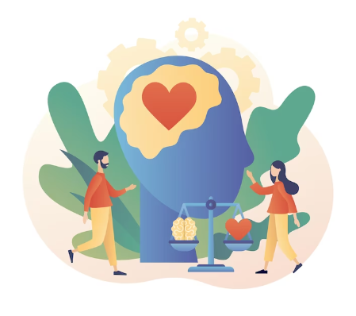

Lembramos também da importância de cuidar de sua mente e espírito. Reserve momentos para a prática da meditação, da gratidão e do autocuidado emocional.Valorize suas emoções e encontre maneiras de equilibrar seus pensamentos, encontrando a serenidade em meio às demandas do dia a dia!